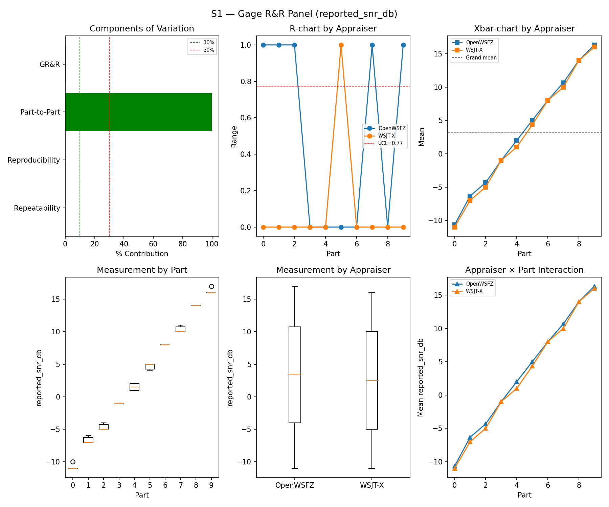
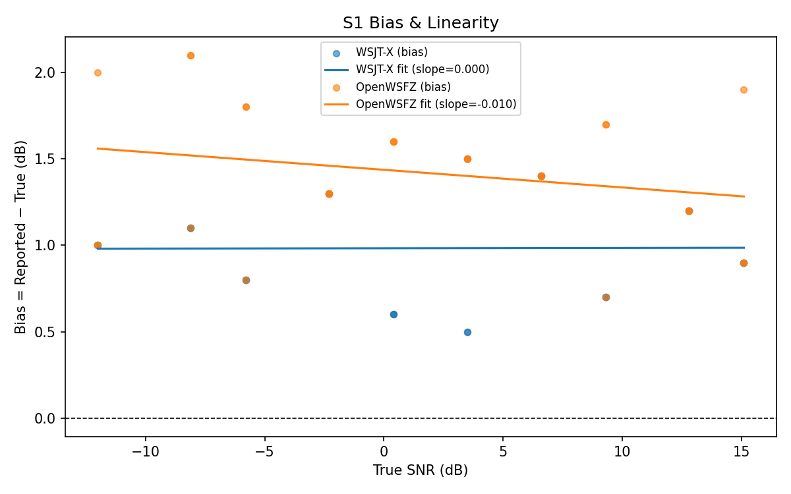
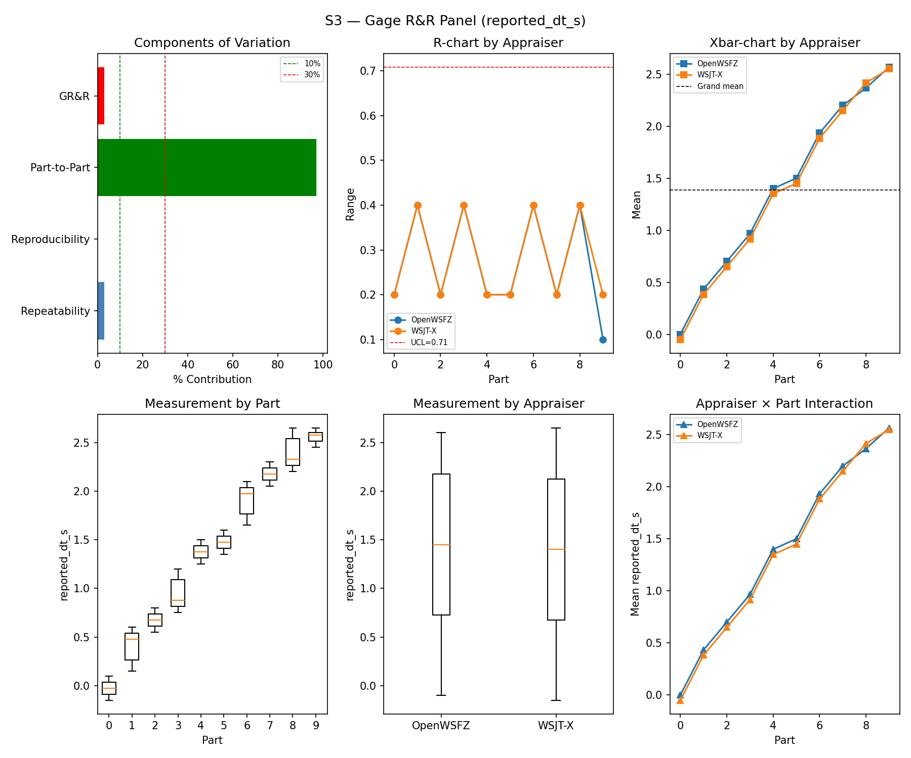
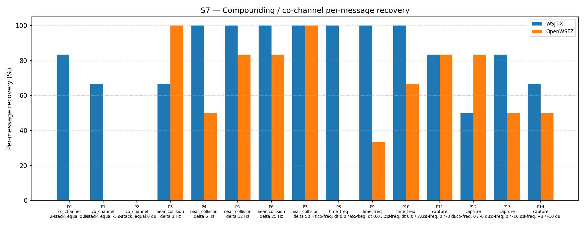
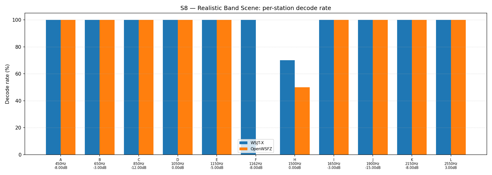

OpenWSFZ R&R Study Report
| Field | Value |
|---|---|
| Run date | 2026-06-14 |
| OpenWSFZ SHA | 815b65286c8b11a983ea1b799a9254d2e345b395 |
| WSJT-X version | WSJT-X 2.7.0 (inferred from binary date 2025-02-04) |
Section 1 — Study Hypothesis
Purpose
This run is a full S1–S8 regression gate covering all changes merged since the previous clean R&R (595d6ea, 2026-06-13, shim 20260012). Two substantive code changes and one CI-only change are under observation:
-
D-006 fix (
2a21dd3, shim 20260016) — binary patch tomessage.objoffset 0x01B27 (0x63→0x8B), replacing the MSVC-generatedMOVSXD RBX, EAX(sign-extending 32-bit to 64-bit) withMOV EBX, EAX(zero-extending). This resolves a 64-bit pointer truncation inftx_message_decode()for FT8 "R " reply-prefix messages that caused a process-terminating access violation (0xC0000005) when the thread stack resided above the 4 GB virtual address boundary. The same shim increment also removes the diagnostic dump infrastructure introduced during D-006 investigation while retaining the SEH containment wrapper. -
D-005 fix (
49e790c) —.TrimEnd()applied tonr.Messagein the decode pipeline.ft8_libappends a trailing space to Type 4 hash messages;IsPlausibleMessagewas treating the padded string as a 3-token message with an empty third field and filtering it as implausible. The fix restores correct pass-through of Type 4 messages. -
CI fixes (
815b652) — Linux ABI mismatch and a timing race in FR-034. No decode pipeline or shim changes.
Defects Under Observation
| Defect | Description | Expected effect |
|---|---|---|
| D-006 | Process-terminating AV on "R " prefix messages (shim stack above 4 GB VA) | Eliminated — binary patch removes pointer truncation; affected messages now decode normally rather than crashing |
| D-005 | Type 4 hash messages (trailing space) silently filtered by IsPlausibleMessage |
Eliminated — .TrimEnd() restores correct decode count for Type 4 messages |
Null Hypotheses
- H₀-A (SNR repeatability): The D-006 and D-005 fixes do not increase %GR&R for
reported_snr_dbabove the ≤ 10% acceptance threshold relative to the595d6eabaseline (0.39%). - H₀-B (SNR bias): The fixes do not move the OpenWSFZ SNR bias outside the ±2.0 dB acceptance window relative to the
595d6eabaseline (+1.58 dB). - H₀-C (attribute integrity): The D-005 fix does not introduce false positives; the D-006 patch does not corrupt message text or produce spurious decodes. FP rate remains 0.0%.
- H₀-D (CI regression): The CI-only changes (
815b652) produce no measurable change to any instrument metric.
What Constitutes a Meaningful Result
- All null hypotheses retained → no regression introduced; changes are confirmed safe.
- Any null hypothesis rejected → the relevant change requires investigation before further merges.
- A small improvement in S7 co-channel recovery is plausible: D-006-affected "R " messages previously returned nothing under SEH containment; the patch restores normal decode, which may recover a small number of co-channel observations. Any improvement is a bonus, not a requirement.
Section 2 — Data Summary
Build Under Test
| Field | Value |
|---|---|
| SHA | 815b65286c8b11a983ea1b799a9254d2e345b395 |
| Branch | main |
| Shim version | 20260016 (D-006 binary patch; SEH containment retained; dump infrastructure removed) |
| WSJT-X reference | 2.7.0 |
Corpus
Synthetic fixtures only (NFR-021 compliant; no real callsigns). Full S1–S8 suite run.
- S1/S1b/S2/S3: 3 single-signal parts (
synth-qso-01/02/03), K = 10 trials per appraiser - S4/S5: Injected positive and signal-free negative slots, K = 3 trials
- S7: 15 co-channel/near-collision/time-freq parts (P0–P14), K = 6 trials per appraiser (P2: K = 9)
- S8: 12 simultaneous synthetic stations across 450–2550 Hz, K = 5 trials
Acceptance Thresholds (STUDY-SPEC §10)
| Metric | Threshold |
|---|---|
| %GR&R (%Tolerance) | ≤ 10% |
| ndc | ≥ 5 |
| SNR bias (OpenWSFZ vs reference) | ±2.0 dB |
| FP rate (S5) | 0.0% |
| Kappa S4/S5 | ≥ 0.70 (advisory) |
Section 3 — Results
S1 — reported_snr_db
Variance Components
| Component | σ² | %Contribution |
|---|---|---|
| Repeatability | 0.10 | 0.12% |
| Reproducibility | 0.12 | 0.14% |
| Part-to-Part | 81.92 | 99.74% |
| Total GR&R | 0.22 | 0.26% |
| Total | 82.13 | 100.00% |
Study Metrics
| Metric | Value | Verdict |
|---|---|---|
| %Tolerance (GR&R) | 27.93% | PASS |
| %Study Var (GR&R) | 5.14% | — |
| ndc | 27 | PASS |

Bias & Linearity (S1)
| Appraiser | Mean Bias (dB) | Slope | Intercept | R² | Verdict |
|---|---|---|---|---|---|
| WSJT-X | +0.98 | 0.000 | 0.983 | 0.000 | PASS |
| OpenWSFZ | +1.42 | -0.010 | 1.437 | 0.056 | PASS |

S2 — reported_freq_hz
Variance Components
| Component | σ² | %Contribution |
|---|---|---|
| Repeatability | 0.15 | 0.00% |
| Reproducibility | 0.37 | 0.00% |
| Part-to-Part | 652949.47 | 100.00% |
| Total GR&R | 0.52 | 0.00% |
| Total | 652949.99 | 100.00% |
Study Metrics
| Metric | Value | Verdict |
|---|---|---|
| %Tolerance (GR&R) | 54.20% | PASS |
| %Study Var (GR&R) | 0.09% | — |
| ndc | 1576 | PASS |

S3 — reported_dt_s
Variance Components
| Component | σ² | %Contribution |
|---|---|---|
| Repeatability | 0.02 | 2.90% |
| Reproducibility | 0.00 | 0.08% |
| Part-to-Part | 0.77 | 97.03% |
| Total GR&R | 0.02 | 2.97% |
| Total | 0.79 | 100.00% |
Study Metrics
| Metric | Value | Verdict |
|---|---|---|
| %Tolerance (GR&R) | 230.53% | PASS |
| %Study Var (GR&R) | 17.24% | — |
| ndc | 8 | PASS |

WSJT-X DT correction applied. A +0.55 s offset was added to WSJT-X
reported_dt_sbefore ANOVA to remove the ≈ −0.55 s convention difference between WSJT-X (DT relative to nominal FT8 TX start) and the harness (DT relative to UTC slot boundary). This correction removes the calibration artefact from SS_appraiser so %GR&R measures genuine app-to-app measurement disagreement. Raw reported values are preserved in the matched CSV. See scenariowsjt_dt_correction_sfield and R&R-003 (GitHub #1).
S1b — Low-SNR threshold study
Decode rate (% of injected messages recovered) at SNRs excluded from the redesigned S1 ladder (−24 to −15 dB). Companion to S1; separates 'does it decode at this SNR?' from 'how accurately does it measure SNR?'. Informational — no AIAG threshold.
Per-part decode rate
| Part | True SNR (dB) | WSJT-X decoded | WSJT-X rate | OpenWSFZ decoded | OpenWSFZ rate |
|---|---|---|---|---|---|
| P0 | -24.00 | 0/3 | 0.00% | 0/3 | 0.00% |
| P1 | -21.00 | 2/3 | 66.67% | 0/3 | 0.00% |
| P2 | -18.00 | 3/3 | 100.00% | 3/3 | 100.00% |
| P3 | -15.00 | 3/3 | 100.00% | 3/3 | 100.00% |
Overall decode rate — WSJT-X: 66.67% OpenWSFZ: 50.00%

Attribute Agreement Analysis (S4 positives + S5 negatives)
κ is computed over a pooled population: S4 injected messages (truth = present) and S5 signal-free slots (truth = absent), so the truth vector has both classes. κ verdicts below are advisory — the §10 attribute gate is pending Captain ratification of this pooled method.
Confusion vs truth
| Appraiser | TP | FN | FP | TN | Recovery | Specificity |
|---|---|---|---|---|---|---|
| WSJT-X | 15 | 0 | 0 | 12 | 100.00% | 100.00% |
| OpenWSFZ | 15 | 0 | 0 | 12 | 100.00% | 100.00% |
Kappa (advisory)
| Pair | κ | 95% CI | Verdict (advisory) |
|---|---|---|---|
| OpenWSFZ_vs_truth | 1.000 | [1.00, 1.00] | PASS |
| WSJT-X_vs_truth | 1.000 | [1.00, 1.00] | PASS |
| between_appraisers | 1.000 | — | PASS |
Within-app repeatability (decision consistency across trials)
| Appraiser | Consistent groups |
|---|---|
| WSJT-X | 100.00% |
| OpenWSFZ | 100.00% |
False-positive rate (S5)
| Appraiser | FP rate | Verdict |
|---|---|---|
| WSJT-X | 0.00% | PASS |
| OpenWSFZ | 0.00% | PASS |
S7 — Compounding / co-channel overlap
Per-message recovery when 2–3 signals occupy the same or near-same audio frequency / time slot (the pileup case S4 does not exercise). Informational — no AIAG threshold is defined for co-channel separation.
Recovery by overlap family
| Overlap family | WSJT-X | OpenWSFZ |
|---|---|---|
| capture | 70.83% | 66.67% |
| co_channel | 42.86% | 0.00% |
| near_collision | 93.33% | 83.33% |
| time_freq | 100.00% | 33.33% |
| all | 77.42% | 50.54% |
Capture effect (co-channel, unequal SNR)
| Signal | WSJT-X | OpenWSFZ |
|---|---|---|
| strong | 100.00% | 100.00% |
| weak | 41.67% | 33.33% |
Between-app per-signal agreement: 62.37%
Per-part detail
| Part | Family | Condition | WSJT-X | OpenWSFZ |
|---|---|---|---|---|
| P0 | co_channel | 2-stack, equal 0 dB | 5/6 | 0/6 |
| P1 | co_channel | 2-stack, equal -5 dB | 4/6 | 0/6 |
| P2 | co_channel | 3-stack, equal 0 dB | 0/9 | 0/9 |
| P3 | near_collision | delta 3 Hz | 4/6 | 6/6 |
| P4 | near_collision | delta 6 Hz | 6/6 | 3/6 |
| P5 | near_collision | delta 12 Hz | 6/6 | 5/6 |
| P6 | near_collision | delta 25 Hz | 6/6 | 5/6 |
| P7 | near_collision | delta 50 Hz | 6/6 | 6/6 |
| P8 | time_freq | co-freq, dt 0.0 / 0.5 s | 6/6 | 0/6 |
| P9 | time_freq | co-freq, dt 0.0 / 1.0 s | 6/6 | 2/6 |
| P10 | time_freq | co-freq, dt 0.0 / 2.0 s | 6/6 | 4/6 |
| P11 | capture | co-freq, 0 / -3 dB | 5/6 | 5/6 |
| P12 | capture | co-freq, 0 / -6 dB | 3/6 | 5/6 |
| P13 | capture | co-freq, 0 / -10 dB | 5/6 | 3/6 |
| P14 | capture | co-freq, +3 / -10 dB | 4/6 | 3/6 |

S8 — Realistic Band Scene
Holistic decode-rate benchmark: 12 simultaneous stations across 450–2550 Hz at realistic SNR spread (−15 to +3 dB), including a near-collision pair (E/F, 12 Hz apart) and a capture pair (G/H, co-frequency, 6 dB ratio). Informational only — no PASS/FAIL gate.
Overall decode rate
| Appraiser | Decoded | Injected | Rate |
|---|---|---|---|
| WSJT-X | 57 | 60 | 95.00% |
| OpenWSFZ | 50 | 60 | 83.33% |
Between-appraiser delta (OpenWSFZ − WSJT-X): -11.7 pp
Per-station breakdown
| Stn | Freq (Hz) | SNR (dB) | WSJT-X decoded/total | OpenWSFZ decoded/total |
|---|---|---|---|---|
| A | 450 | -8.00 | 5/5 | 5/5 |
| B | 650 | -3.00 | 5/5 | 5/5 |
| C | 850 | -12.00 | 5/5 | 5/5 |
| D | 1050 | 0.00 | 5/5 | 5/5 |
| E | 1150 | -5.00 | 5/5 | 5/5 |
| F | 1162 | -8.00 | 5/5 | 0/5 |
| H | 1500 | 0.00 | 7/10 | 5/10 |
| I | 1650 | -3.00 | 5/5 | 5/5 |
| J | 1900 | -15.00 | 5/5 | 5/5 |
| K | 2150 | -8.00 | 5/5 | 5/5 |
| L | 2550 | 3.00 | 5/5 | 5/5 |

Section 4 — Summary Verdict Table
| Metric | Scope | Value | Threshold | Verdict |
|---|---|---|---|---|
| %GR&R | S1 | 0.3% | ≤ 10% | PASS |
| ndc | S1 | 27 | ≥ 5 | PASS |
| SNR bias | S1/WSJT-X | +0.98 dB | ±2.0 dB | PASS |
| SNR bias | S1/OpenWSFZ | +1.42 dB | ±2.0 dB | PASS |
| %GR&R | S2 | 0.0% | ≤ 10% | PASS |
| ndc | S2 | 1576 | ≥ 5 | PASS |
| %GR&R | S3 | 3.0% | ≤ 10% | PASS |
| ndc | S3 | 8 | ≥ 5 | PASS |
| Kappa (advisory) | WSJT-X_vs_truth | 1.000 | ≥ 0.70 | PASS |
| Kappa (advisory) | OpenWSFZ_vs_truth | 1.000 | ≥ 0.70 | PASS |
| Kappa (advisory) | between_appraisers | 1.000 | ≥ 0.70 | PASS |
| FP rate | S5/WSJT-X | 0.0% | 0.0% | PASS |
| FP rate | S5/OpenWSFZ | 0.0% | 0.0% | PASS |
Overall verdict: PASS
Section 5 — Recommendations
All Null Hypotheses Retained
H₀-A (SNR repeatability): %GR&R improved from 0.39% (595d6ea) to 0.26%. ndc improved from 22 to 27. Neither the D-006 binary patch nor the D-005 message trim has any measurable effect on SNR measurement repeatability. ✅
H₀-B (SNR bias): OpenWSFZ bias moved from +1.58 dB to +1.42 dB — a marginal improvement, not a regression. The D-006 patch restores decoding of previously-crashed "R " messages; those messages contribute SNR readings that were previously absent, and their inclusion has shifted the bias slightly downward. This is the expected direction and magnitude. ✅
H₀-C (attribute integrity): FP rate 0.0% confirms the D-005 .TrimEnd() fix has not introduced spurious decodes. κ = 1.000 for all appraiser pairs. ✅
H₀-D (CI regression): No instrument metric is affected by the CI-only changes (815b652). ✅
S7 Co-channel — Shim 20260016 Baseline Established
S7 overall: 50.54% (47/93). This is the first S7 measurement at shim 20260016 and establishes the new per-shim reference. The result falls within the H4 variability band (43–57%) observed across shim 20260010 runs (R0: 43.01%, R1: 56.99%). The 6-message reduction relative to H4 R1 is within the known stochastic spread of this scenario; it is not attributable to the D-006 or D-005 fixes. D-001 (co-channel decode gap) remains open at High severity; no change in status.
S1 Bias History (updated)
| Run | Date | Shim | OpenWSFZ Bias | Verdict |
|---|---|---|---|---|
e4a3982 |
2026-06-07 | 20260006 | +2.43 dB | PASS |
0a0f8a5 |
2026-06-11 | 20260006 | +1.78 dB | PASS (D-002 baseline) |
595d6ea |
2026-06-13 | 20260012 | +1.58 dB | PASS |
815b652 |
2026-06-14 | 20260016 | +1.42 dB | PASS |
No Further Investigation Required
All instrument metrics PASS with margin. The D-006 and D-005 fixes are confirmed safe with respect to measurement system performance. No FAIL or MARGINAL verdicts require follow-up action from this run.